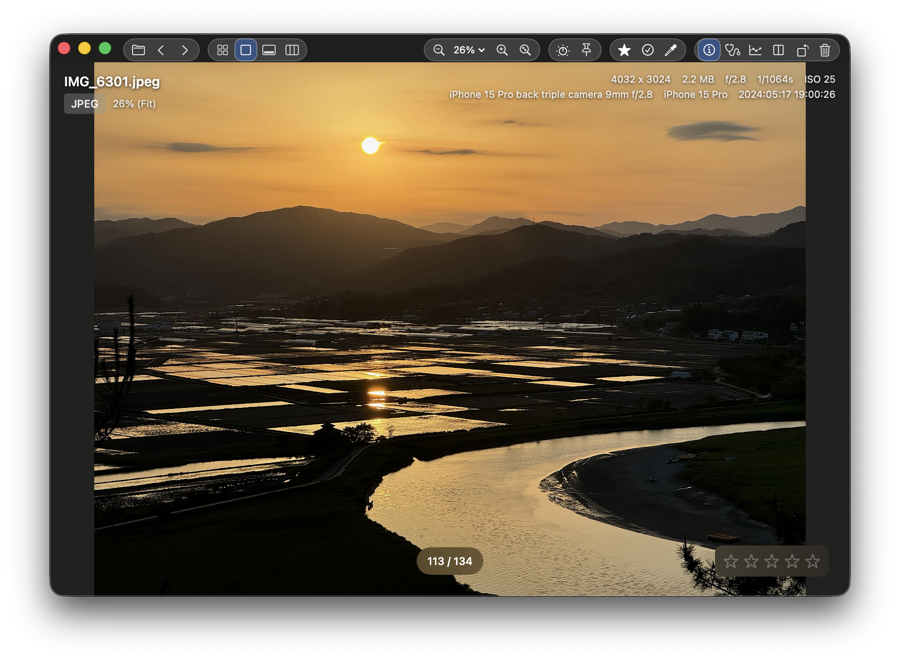

1. 빠르고 간결한 기본 사진 뷰어
1. A fast, minimal photo viewer
SnapView는 사진을 빠르게 보기 위해 불필요한 복잡함을 덜어냈습니다. 감상에 필요한 핵심 정보만 깔끔하게 보여주고, Mac-native 앱
특유의 가벼운 반응성과 쾌적한 사용감으로 사진을 더 빠르고 편하게 즐길 수 있어요.
SnapView removes unnecessary complexity so you can simply view photos
faster. It keeps only the essentials on screen, and as a Mac-native app, it delivers lightweight
performance and a smooth, comfortable viewing experience.

2. 그리드로 수백 장을 한 번에 훑기
2. Scan hundreds at a glance with Grid
Grid View는 많은 이미지를 빠르게 탐색하기 위한 화면이에요. 한 화면에서 전체를 훑고, 원하는 컷으로 즉시 점프하며, 흐름을 끊지 않고
연속적으로 확인할 수 있습니다.
Grid View is built for fast browsing across large sets. Scan the whole set
in one view, jump instantly to any frame, and keep reviewing without breaking your flow.

3. 필름스트립으로 흐름 끊김 없이 쭉 보기
3. Stay in flow with Filmstrip
Filmstrip은 가장 익숙한 방식의 연속 탐색 뷰예요. 한 장씩 빠르게 넘기며 전체 흐름을 파악하고, 많은 사진을 빠르고 정확하게 확인할 수
있습니다. SnapView의 기본기를 가장 직관적으로 보여주는 화면이에요.
Filmstrip is the classic continuous browsing view. Flip through images
fast, understand the full flow, and review large sets with speed and precision. It’s the most
straightforward expression of what SnapView does best.

4. 정리가 필요할 때는, Manage Mode로 강력하게
4. When it’s time to manage, do it powerfully in Manage Mode
SnapView의 핵심은 빠른 보기와 빠른 결정이에요. 그리고 정리가 필요해지는 순간이 오면, Manage Mode로 강력하게 관리할 수 있어요.
별점/플래그/컬러 라벨로 선택 결과를 한 번에 정리하고, 필터로 필요한 것만 남김으로써 전문가 수준의 사진 관리 경험을 드립니다.
SnapView is built for fast viewing and fast decisions. And when it’s time
to organize, you can manage everything powerfully in Manage Mode. Organize selections in one
pass with ratings, flags, and color labels—then use filters to keep only what matters for a
pro-grade photo management experience.